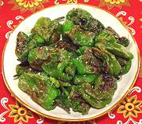

|
Padron PeppersSpain - Pimientos de Padron | ||||
| Serves: Effort: Sched: DoAhead: |
5 app * 7 min Yes |
Sometimes called "Spanish Roulette", most are mild, a few are not. This dish is very popular in tapas bars in Spain and California. | |||
|
|
10 2 ar ---- |
oz T --- |
Padron Peppers (1) Olive Oil, pure (2) Sea Salt, coarse -- Serve with Beer |
I served these (Sashitos) at a buffet party (late 2019) and they were very much liked - and all eaten. People even asked where they could get the peppers. Make: - (7 min)
|